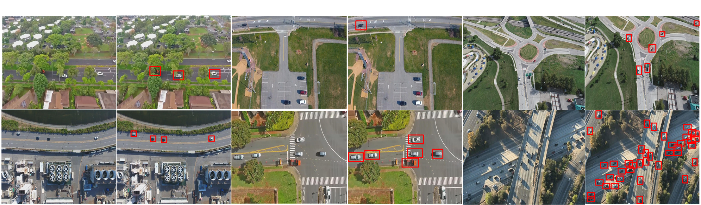

The MOR-UAV dataset consists of 30 video sequences which are collected from multiple video recordings captured
with a UAV platform at a number of locations in highways, flyovers, traffic intersections, urban areas, agricultural regions, etc. These videos represent various scenarios including occlusion, nighttime, weather changes, camera motion, changing altitudes, different camera views, and angles. The videos are recorded at 30 frames per second (fps) and the resolution varies from 1280 × 720 to 1920 × 1080. The average, min, max lengths of the sequences are 364 .93 , 64 and 1 , 146 respectively. About 10, 948 frames in the MOR-UAV dataset are annotated with approximately 89, 783 bounding boxes representing moving vehicles. These vehicles are categorized into two classes: car (80 , 340 bounding boxes) and heavy vehicles (9 , 443 bounding boxes). The average, min, max lengths of the bounding box heights are 29.011, 6, 181, respectively. Similarly, average, min, max lengths of the bounding box widths are 17.641, 6, 106, respectively. We resize all the video frames in MOR-UAV dataset to 608 × 608 × 3 for a uniform setting in training and evaluation.

Due to lack of available benchmark datasets with labelled bounding boxes for moving object recognition (MOR), we created a new set of ground truths
by annotating 42,614 objects (14,814 cars and 27,800 person) in 24,923 video frames from CDNet 2014. We selected 16
video sequences having 21,717 frames and 38,827 objects (13,442 cars and 25,385 person) for training. For testing, 3 video
sequences with 3,206 frame and 3,787 objects (1 ,372 cars and 2,415 person) were chosen. We created axis-aligned
bounding box annotations for moving object instances in all the frames. Since, there has been no previous attempt to
perform such task, we defined our own train and test divisions for qualitative and quantitative evaluation. All the video
frames are reshaped into 608x608 for uniform training and evaluation. For more details, refer to the paper, 1. "MotionRec: A Unified Deep Framework for Moving Object Recognition,"
IEEE Winter Conference on Applications of Computer Vision (WACV-2020), US, 2020.
We collected around 2,000 new aerial images from online sources and generated a new dataset named
airborne dataset (ABD) by annotating approximately 42,408 objects. The objects were annotated with
four different classes: car (33,170), heavy vehicle (6,407), plane (743) and boat (2,088). The dataset
consists of a variety of scene including urban and residential areas, river banks, industrial aeras,
agricultural regions, bushes, railway tracks, traffic, country roads, airports, etc. References:
1. “AVDNet:
A Small-Sized Vehicle Detection Network for Aerial Visual Data,” IEEE Geoscience and Remote Sensing Letters, vol. 17, no. 3 2020;
2. "SSSDET: Simple Short and Shallow Network for Resource
Efficient Vehicle Detection in Aerial Scenes," 26th IEEE International Conference on Image Processing (ICIP-2019), Taipei, Taiwan, 2019.
A custom dataset was generated in a staged/controlled environment. We shot from four strategically placed cameras
simultaneously to capture multiple views of same scene. The videos were recorded at four different locations in different times
of the day. The scenes involve normal data, fight happening in different scenarios, snatching, kidnapping etc.
Scenes were shot indoor/outdoor, in natural light-artificial light, low light as well to cover illumination changes. The videos were recorded
from varied distances to capture subjects with varying size. Post processing yielded usable clips of approx. 90 minutes (90x60x30x4= 648000 frames).
Snippet for the same are depicted in the figure.